Fine green field texture; clear of the nearby actor. Vorxu Altair-to-Gatrea route frame.
Reference-only image inventory for the TerrainShopPassV1 art review. Crops below are preserved FFII PR images; actual references are kept separate from generated production art. Crop rectangles, source hashes and attribution are in crop-register.json and source-manifest.json.
Terrain and shop boards reflect frozen candidate proofs · only weapon row has local PR interior evidence
Fine green field texture; clear of the nearby actor. Vorxu Altair-to-Gatrea route frame.
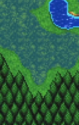
Narrow cobalt channel; thin green/earth bank, adjacent forest. No bridge in this crop.

Byte-identical to the crop already reviewed in WorldLayerComparisonV1; a stone bridge touches the top edge.
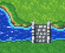
Bridge deck, blue channel and both banks remain distinct.
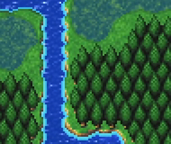
Pointed individual crowns over a visible green ground layer.

Walled blue-roof cluster and central keep; Fynn shape reference, not Altair geometry or palette.
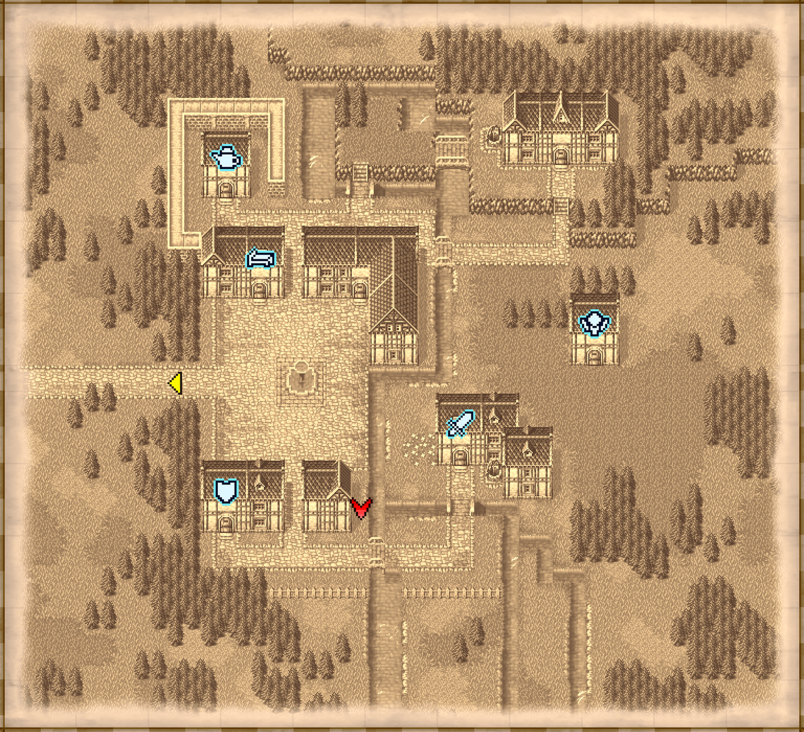
Sepia automap; layout/topology only, not gameplay color.
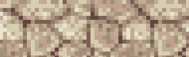
Warm gray-beige irregular paving from a Klardendum screenshot. Other-town identity unconfirmed; material only.
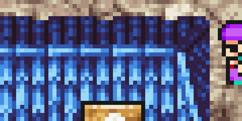
Blue tiled roof, pale wall, sign; other-town identity unconfirmed.
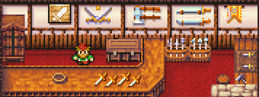
Actual PR image with merchant, substantial L-counter, wall display and red floor. No type-specific armor/item/magic local screenshots in this bundle.
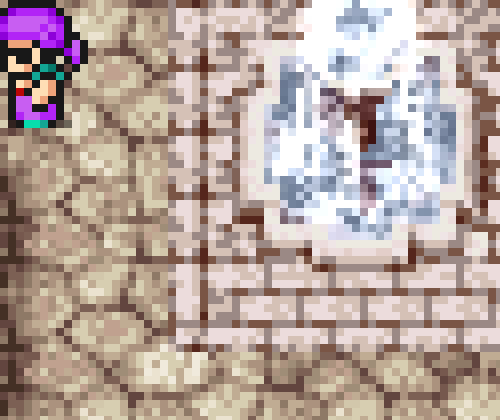
Statue-like pale stone feature; identity and function are uncertain. Not a named temple reference.
Actual preserved PR images appear on the left and V3 candidate assets/proofs on the right. Captions state the scale and context limits. River and road junction atlases show authored topology, not retail map compositions. The overworld forest field is diagnostic-only and shows repeated crown groupings; no repeatability contract is assigned.
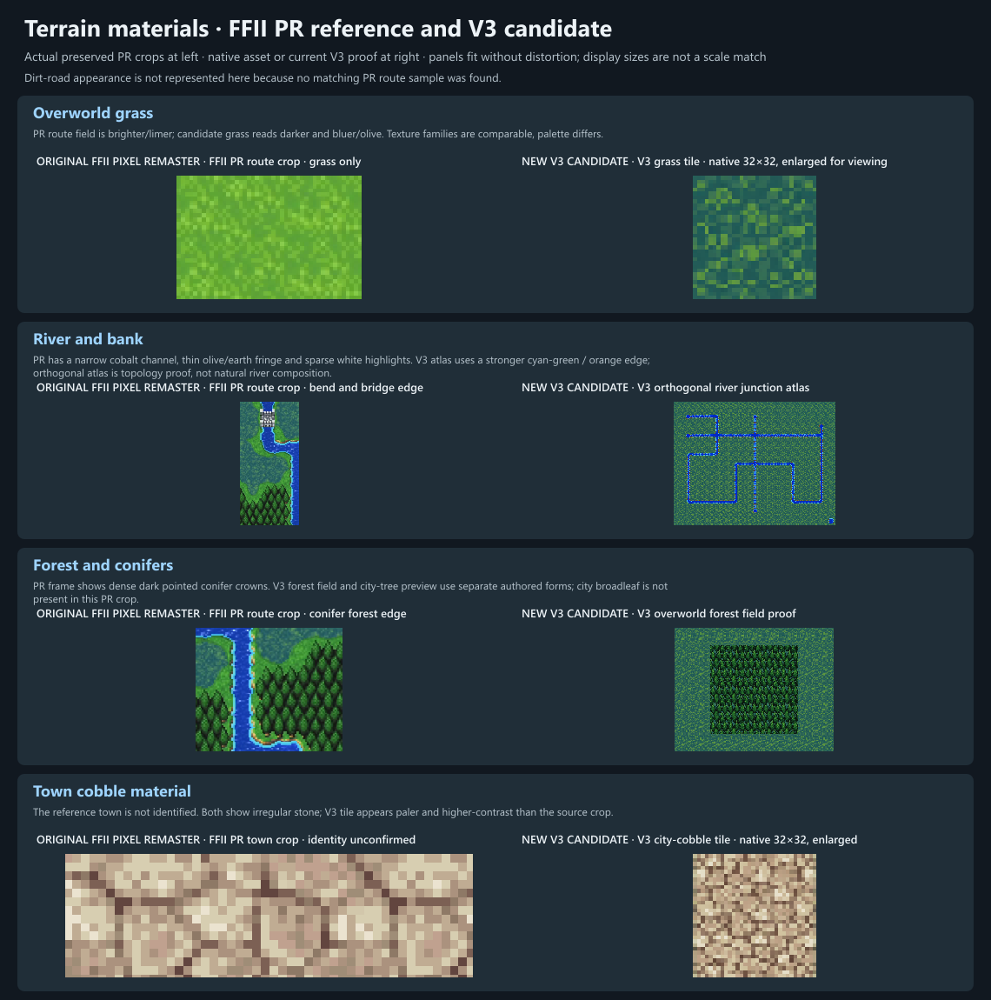
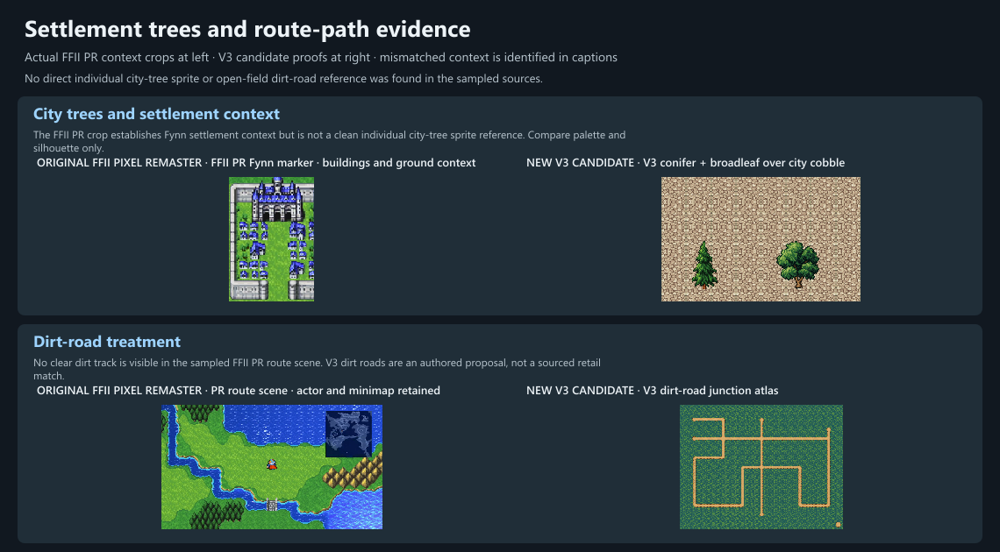
The Tobul row uses an actual FFII PR screenshot. Armor, item, magic, and temple panels are V1 art proposals because matching local retail interiors were not available to compare. The board uses frozen room proofs; source hashes are recorded in the adjacent snapshot manifest.
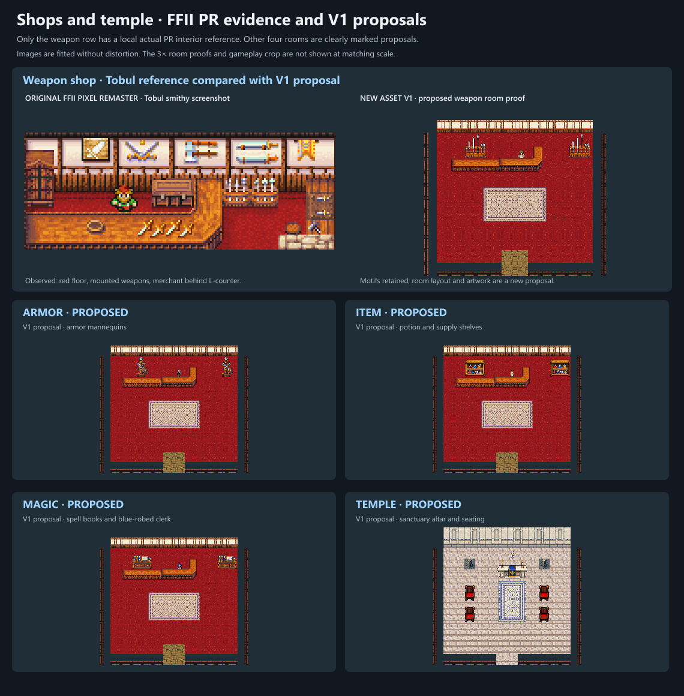
See README.md for palette and layout observations, source attributions, and distinctions between observed terrain and inference. Store-category links and their image-fetch status are documented in shop-reference-status.json. Vorxu has page-listed weapon, armor and item shop images, but the CDN image bytes were not available to this review; an Altair magic-shop interior and a named PR temple crop were not found.
Category-specific rooms are proposals and should not be described as exact FFII PR layouts.